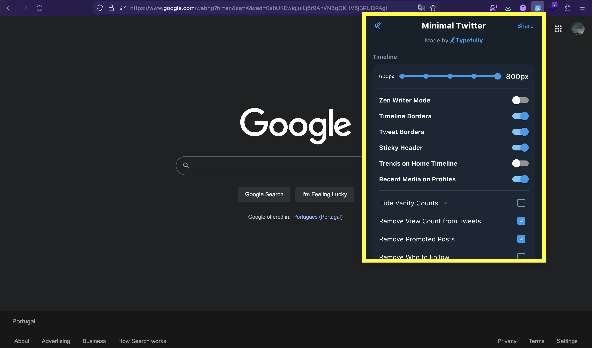
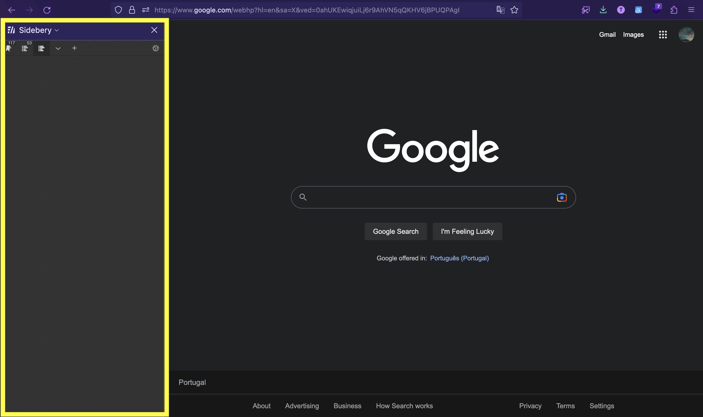
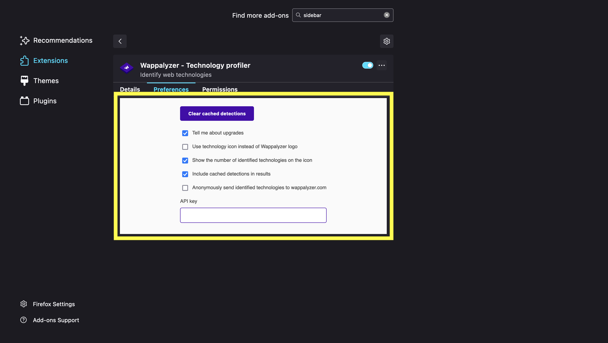
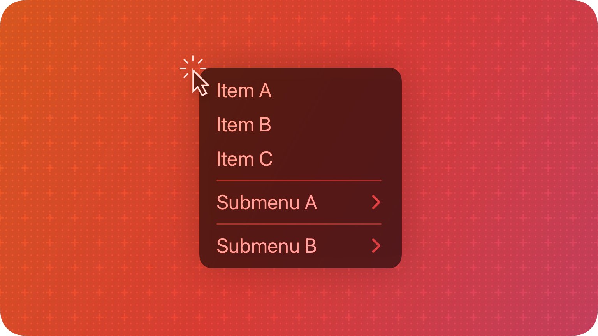

Web Browser Extension
Exploring the funcionalities of web extension API
A Web extension turns the web navigation more customizable.
How?
with JavaScript
It also possible to interact with
Examples
Check a full list of web APIs
Lets see some examples of web extensions
Modifying the page
Adblocker
TWP - Translate Web Pages
Minimal Theme for Twitter

ImprovedTube
Adding new features

Svg Export
LanguageTool

Copy Code
Helping Developers
React Developer Tools
Extension Anatomy
1- Popup
2- Sidebar
3- Options
JavaScript Scripts
- Background scripts
- Content scripts
Background scripts
Listen the
- Adding a new bookmark
- Navigation to a new page
- Closing a tab
- Installing extension (...)
Installing the extension
browser.runtime.onInstalled.addListener(function() {
// code to run when the extension is installed
});
Creating new bookmars
browser.bookmarks.onCreated.addListener(function() {
// do something
});
Receiving and Sending messages
browser.runtime.onMessage.addListener(function(message, callback) {
if (message == 'hello') {
sendResponse({greeting: 'welcome!'})
} else if (message == 'goodbye') {
chrome.runtime.Port.disconnect();
}
});
Content scripts
These are the scripts that run in the
Therefore they can access the content and interact with it
Background Scripts VS Content Scripts
Background Scripts can access
Content scripts can only access a
However they can communicate with background scripts and thereby indirectly access the WebExtension APIs.
Manifest.json
A JSON file that contains the extension's metadata
{
// Required
"manifest_version": 3,
"name": "My Extension",
"version": "1.0.1",
// Recommended
"action": {
"default_popup": "popup.html",
"default_title": "Click Me", // Tooltip
"default_icon": {
"16": "images/icon16.png",
},
},
"default_locale": "en",
"description": "A plain text description",
"icons": {...}, // Extension Icons
// Optional
"sidebar_action": {
"default_title": "My sidebar",
"default_panel": "sidebar.html",
"open_at_install": true
}
"options_ui": {
"page": "options.html",
"browser_style": true
}
"devtools_page": "devtools.html",
"permissions": ["..."],
"host_permissions": [...],
"web_accessible_resources": [...]
"author": "developer@example.com",
"automation": {...},
"background": {...},
"chrome_settings_overrides": {...},
"chrome_url_overrides": {...},
"commands": {...},
"content_scripts": [{...}],
"content_security_policy": {...},
"cross_origin_embedder_policy": {...},
"cross_origin_opener_policy": {...},
"declarative_net_request": {...},
"event_rules": [{...}],
"export": {...},
"externally_connectable": {...},
"file_browser_handlers": [...],
"file_system_provider_capabilities": {...},
"homepage_url": "https://path/to/homepage",
"import": [{...}],
"incognito": "spanning, split, or not_allowed",
"input_components": [{...}],
"key": "publicKey",
"minimum_chrome_version": "107",
"nacl_modules": [...],
"oauth2": {...},
"omnibox": {...},
"optional_host_permissions": ["..."],
"optional_permissions": ["..."],
"replacement_web_app": "https://example.com",
"requirements": {...},
"sandbox": {...},
"short_name": "Short Name",
"storage": {...},
"tts_engine": {...},
"update_url": "https://path/to/updateInfo.xml",
"version_name": "1.0 beta",
}
Manifest version 2 vs version 3
Version 3 adds
The new rules provide users increased
Service Worker
The background scripts are now just one file and defined as
The scripts are
In version 2 the scripts could be persistent
- A
persistent script is a script that is loaded when the extension starts and unloaded when the extension is disabled or uninstalled - A
non-persistent script are only loaded when needed to respond to an event and unloaded when they become idle (not being used)
Blocked remote JavaScript
Now, web extension can only execute JavaScript that is included within their package and cannot use remotely-hosted code.
Exploring some APIs
bookmarks
browser.bookmarks.create()
browser.bookmarks.get()
browser.bookmarks.search()
browser.bookmarks.onCreated
browser.bookmarks.onRemoved
browser.bookmarks.onMoved
BookmarkTreeNode
Bookmarks are organized in a based tree data sctruture
Each node is a bookmark, a bookmark folder, or a separator.
storage
There are 4 different storage areas
- storage.local
- storage.session
- storage.sync
- storage.managed
storage.StorageArea.get()
storage.StorageArea.set()
storage.StorageArea.remove()
storage.StorageArea.clear()
browser.storage.onChanged
cookies
browser.cookies.get()
browser.cookies.getAll()
browser.cookies.set()
browser.cookies.onChanged
downloads
browser.downloads.download() //give an url
browser.downloads.search()
browser.downloads.pause()
browser.downloads.onCreated
browser.downloads.onErased
context menus

browser.menus.create({
id: "remove-me",
title: "Iteam C",
contexts: ["all"]
}, onCreated);
runtime
browser.runtime.sendMessage()
browser.runtime.onMessage
tabs
browser.tabs.goBack()
browser.tabs.reload()
browser.tabs.remove()
browser.tabs.getCurrent()
browser.tabs.setZoom()
browser.tabs.onMoved
browser.tabs.onActivated
browser.tabs.onZoomChange
and so much more...
I Bet
After today you will try to solve your navigation issues creating a web extension